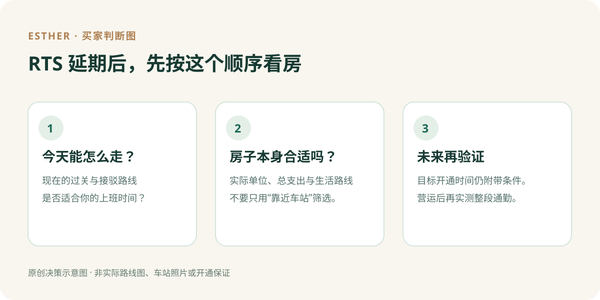

新山买家指南 · 资料核对：2026 年 10 月 4 日
RTS 有了新时间表：现在在新山买房，怎样选区？
简短回答：不必因为开通目标延后，就立即放弃或抢买某个地区。对经常往返新加坡的人，先确认今天可用的过关方式是否能配合你的生活，再算看中的实际单位和每月总支出。等 RTS 真正开始载客后，才用自己的路线实测它带来的便利。对不需要频繁跨境的人，车站距离更不应盖过预算、房屋条件和日常生活。

原创决策示意图，不是实际路线图、车站照片或开通保证。
这次到底改了什么？
马来西亚交通部与新加坡陆路交通管理局在 2026 年 10 月 2 日的联合公告中表示，RTS Operations 现预计 2027 年 2 月开始载客服务。官方说两国主要基础设施已大致完成；营运方预计在 2026 年 12 月 31 日前完成最后的系统测试与试运行，之后还须取得独立安全认证及两国监管批准。因此，2027 年 2 月是目标，不是已确定的开通日。
RTS 计划连接新山 Bukit Chagar 与新加坡 Woodlands North；车站之间的行程与整段上班路线不是同一回事。LTA 的项目资料说明了线路与两端车站，但该概览页仍可能显示较早的开通目标；判断最新时间应以 10 月 2 日联合公告为准。
如果你在 2026 年就要搬，先用今天的交通条件决定
有些买家看见「靠近 RTS」就想象未来每天可以搭车过关。但如果你在服务开始前就要入住，最先影响生活的是现在的路线：从家到工作地点如何走、几点出门、是否需要开车或换乘、回程能否接受。把实际出行时间和成本写下来，再看房子是否仍值得买。不要把尚未开通的服务当成当前已经拥有的便利。
若销售资料写「几分钟到车站」，也要核对是从项目大门、车位还是附近路口起算；你实际可能还要走路、接驳、通关并继续前往工作地点。购房前能实测的是现有道路和接驳路线；未来列车投入服务后的完整体验，要等营运后才能验证。
靠近车站有没有价值？要看你是否真的会使用
如果你经常跨境，车站与住家之间的连接值得认真比较，但仍要连同户型、停车、生活配套及可承担的总支出一起看。倘若为了靠近车站提高预算，问自己：即使 RTS 开通时间再变化、自己换工作地点，房子是否仍适合住？
如果你只是偶尔去新加坡，或主要在新山生活，车站距离可能不是首要条件。比起追逐交通话题，更值得看实际房屋状态、上班和家庭路线、室内空间，以及管理费或维护开支。公寓与有地住宅的开支项目不同，比较时应按具体房源核实。
延期会让附近房价或租金下跌吗？
**不能从这次时间调整直接得出结论。**某个项目未来售价、租金或出租需求，需要看可核查的交易、供应、房屋条件和真实需求；这份官方交通公告没有提供房地产价格预测。反过来，也不能因为线路未来开通，就保证房价上升或一定租得出去。若有人给你明确的涨跌数字，先问数据来源、时间、比较范围和计算方法。
看房时，把这六个问题带上
- 我现在每周需要过关几次？在 RTS 未载客前，实际会怎么走？
- 从候选单位的大门到现有过关路线，要多久、怎么接驳？未来去 Bukit Chagar 的路线又是什么？
- 我看的具体单位售价是多少？自备款、每月供款、管理费或维护开支合计后是否可负担？
- 如果我不使用 RTS，这个地区的工作、学校、购物和家庭生活还适合我吗？
- 项目所说的车站距离、接驳与交付内容，有哪些能在正式资料中核对？
- 如果服务目标继续改变，我的通勤和持有计划是否仍可行？
RTS 的新目标是值得更新的信息，但买房并非只是在猜开通日。先用现在的生活条件筛选，再把未来交通便利当成需要持续核实的可能收益，这样比较不会让一条新闻替你做决定。
**想一起比较两个新山地区？**告诉我你的预算、每周过关次数与正在看的地区。我可以先帮你整理该问的问题，再核对适合看的房源。
WhatsApp 按钮：把我的通勤与找房条件告诉 Esther（读者自行检查并发送消息）
延伸阅读：在 JB 看新楼盘，先查什么？首次买家的 6 个问题；认识 Esther 与找房咨询。
资料来源与核对日期
- 马来西亚交通部与新加坡 LTA 联合公告，2026-10-02：新目标、测试、安全认证及审批条件。
- 柔佛州政府 Media Digital Johor，2026-10-03：马来西亚方面的同一进度说明。
- 新加坡 LTA RTS Link 项目概览：线路及两端车站背景。其页面较早开通目标不应用于替代最新联合公告。
**资料核对日期：2026 年 10 月 4 日。**交通目标、实际房源及融资条件以后续官方公告和个案资料为准。本文是买家决策清单，不是房价预测或贷款建议。